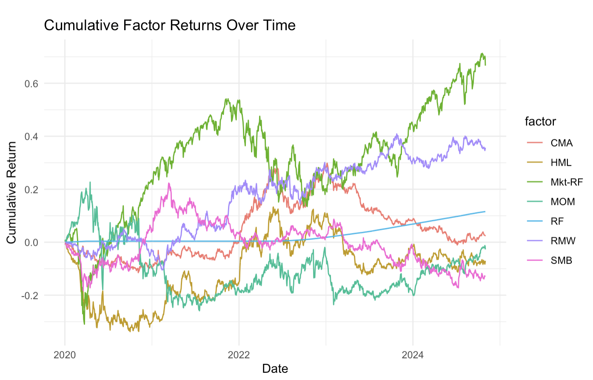
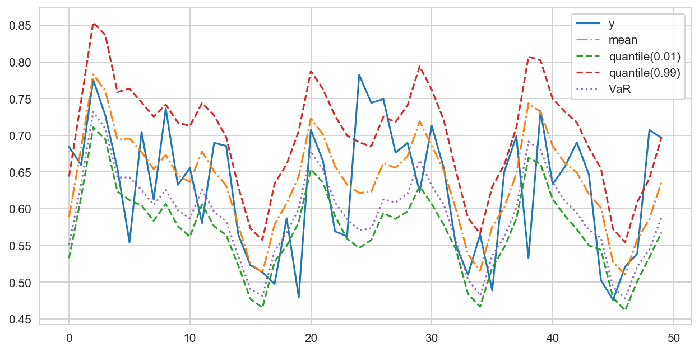
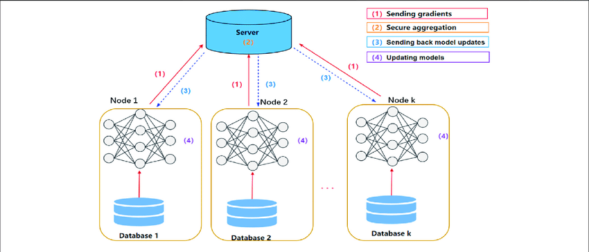
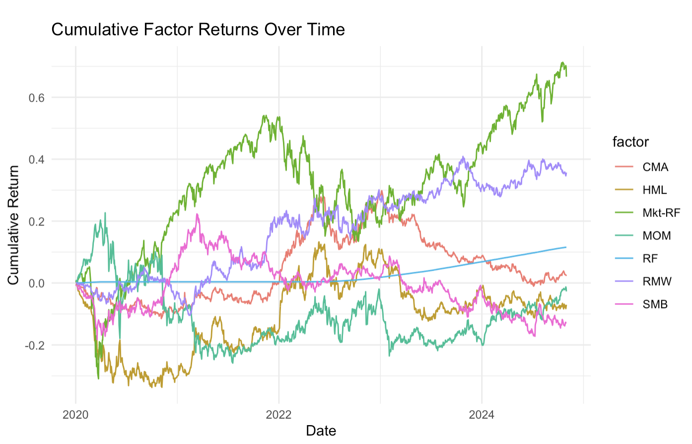
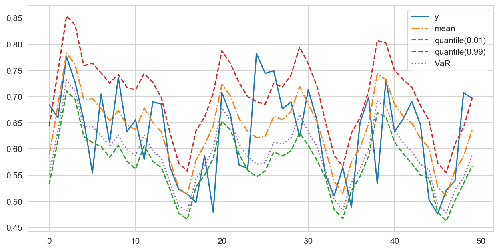
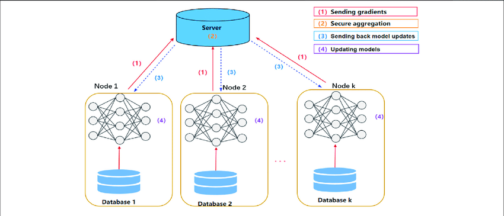

Yu-An (Aaron) Chen
Hi there! I'm a 2023 graduate from Carnegie Mellon University currently working as an Analytics Engineer at Insurify, an insurance aggregator with a $600M Series B valuation. I'm proficient in Python, R, PySpark and SQL and experienced with tools like dbt, Databricks, AWS, and sklearn. With practical experience in MLOps, data pipeline development/management, and data science, I'm confident that I can be a valuable contributor to any team looking to tackle complex data analysis problems.
 View my Resume
View my Resume
 Connect on LinkedIn
Connect on LinkedIn
 View Personal GitHub
View Personal GitHub
Personal Projects
 Analytics Engineering Demo
Analytics Engineering Demo
 Modern Portfolio Theory & Optimal Asset Allocation

Portfolio Exposure Attribution

Neural Wavelets for Time Series Compression

Distributed ML with Million Song Dataset
Government Bias in Affordable Housing
Modern Portfolio Theory & Optimal Asset Allocation

Portfolio Exposure Attribution

Neural Wavelets for Time Series Compression

Distributed ML with Million Song Dataset
Government Bias in Affordable Housing
Certifications
🎲 Intro to Financial Engineering and Risk Management (credential)
- Offered by Columbia University on Coursera
- No Arbitrage, pricing by replication, binomial model, Black Scholes, etc.
- Took additional coursework exploring greeks, put-call parity, volatility smile, etc.
⚙️ Advanced Machine Learning Operations (credential)
- Offered by Databricks at the 2025 Data + AI Summit
- MLFlow, CI/CD, model drift prevention, retraining automation, lakehouse monitoring, experiment assigment
☁️ AWS Cloud Technical Essentials (credential)
- Offered by AWS on Coursera
- IAM, EC2, Lambda, Fargate, ECS, S3, EBS, DynamoDB, RDS, EC2 Load Balancing/Auto Scaling, etc.
- VPCs, subnets, security groups, roles, groups, etc.
🏦 Bloomberg Market Concepts (credential)
- Explores key concepts in financial markets and drivers of changes in each area
- Economic indicators, currencies, fixed income, equities, commodities
🏙️ Bloomberg Finance Fundamentals (credential)
- Explores key concepts in finance and investment and introduces the roles of various financial professions in the economy
- Financial institutions, types of investment, investing strategies, Circular Flow of Income